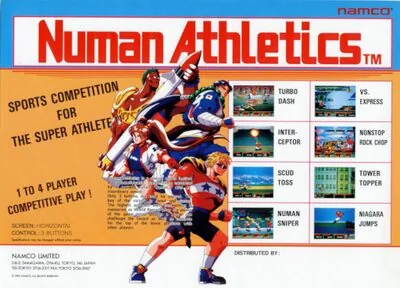
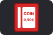

MAME (lr-mame2003)
Numan Athletics
- Año: 1993
- Desarrollador: Namco
- Género: Deportes / Atletismo
- Jugadores: 4 jugadores
- Probando
- A dos: el J2 mete moneda con 2P
Atletismo fantástico de Namco (1993) para hasta cuatro jugadores, con ocho pruebas, como detener misiles con poderes místicos, cruzar unas cataratas en triple salto o romper rocas. Se juega con tres botones: los de los lados para correr o moverse y el del centro para la acción.
Controles
Probado en la bartop (2026-11-17): arranca y los botones van como en la tabla. Tres botones (MAME 2003, con remapeo: B = Botón 1, A = Botón 2, R = Botón 3). Según ScreenScraper, los de los lados (1 y 3) sirven para correr o moverse y el del centro (2) para la acción. Cada jugador tiene su propia moneda. ⚠️ Sin probar en la bartop.
| Panel | Juego |
|---|---|
 | Botón 1: correr o moverse (alternando con R) |
 | Botón 2: acción (saltar, lanzar…) |
 | Botón 3: correr o moverse (alternando con B) |
 | Empezar (jugador 1) |
 | Meter una moneda |
 | Meter una moneda y empezar (jugador 2) |
+  | Salir del juego |
El panel en MAME (lr-mame2003)

🔎 Para mirar en la bartop (1)
Comprobaciones rápidas: con mirarlo jugando un momento basta. Cuéntamelo en las pruebas.
- ¿A dos se juega a la vez o por turnos?
Argumento
No hay una historia como tal: cuatro atletas superhumanos, los Numan, viajan por el mundo para competir en ocho pruebas. Son Sharon (Francia, jugador 1), Harry Boffin (EE. UU., jugador 2), Masaemon (Japón, jugador 3) y Bongo (Kenia, jugador 4). Les presenta un locutor con dos chicas conejito.
Final: tras la última prueba se suman los resultados; los que no llegan al final quedan «retirados» y el ganador protagoniza el final. Hay cuatro finales, uno por Numan.
Fuentes
Jugabilidad
- Tipo de juego: deportes de Namco (1993), parecido a Track & Field de Konami. Hasta cuatro jugadores; cada puesto lleva a su Numan.
- Botones: los botones 1 y 3 sirven para correr (alternándolos) o moverse y apuntar; el 2, para disparar, saltar o golpear. Coincide con la tabla de controles de la ficha.
- Récords: el mejor tiempo o marca de una prueba es «récord del mundo» y se apuntan las iniciales.
Fuentes
Guía de niveles
| Prueba | Dónde | Cómo |
|---|---|---|
| Turbo Dash | EE. UU. | Carrera: alternar B y R. |
| Interceptor | Rusia | Moverse con B y R y disparar con A a las balas de un barco; si una toca el suelo o al Numan, prueba fallada. |
| Missile Toss | Kenia | Correr con B y R y mantener A antes de la línea roja para lanzar el misil con el ángulo bueno. |
| Numan Sniper | Antártida | Disparar con los tres botones a los monstruos de la izquierda, el centro y la derecha. |
| Vs. Express | Japón | Pulsar A cuando llega el tren bala y luego alternar B y R para empujarlo fuera de la pantalla. |
| Tower Topper | Francia | Saltar con A de un edificio a otro antes de que se apague la llama de los pies. |
| Nonstop Rock Chop | Australia | Cargar con B y R y golpear la roca con A; si no está lleno, la mano se queda atascada. |
| Niagara Jumps | Zambia | Correr con B y R y pulsar A tres veces para saltar las cataratas y pasar la línea azul. |
Trucos y secretos
- Cuatro finales, uno por cada Numan que gane.
- Secuela: Mach Breakers: Numan Athletics 2 (1995).
Fuentes
Longplay

Partida completa de la recreativa con Masaemon (11 min), de Retro Fighters: Numan Athletics - Masaemon (Arcade / 1993) 4K 60FPS. ⚠️ Los capítulos del vídeo no nombran la prueba del misil.
Pulsa el minuto de un nivel para ver el vídeo desde ese punto.
Niveles
| Prueba | Momento |
|---|---|
| 1-4 | |
| 5-8 | |
| Otros momentos | Resultados y final ▶ 8:51 |
Otros vídeos de la versión recreativa
- DolmaKalem (45 min): partida con los cuatro Numan, uno tras otro, para ver los cuatro finales. [[Arcade] Numan Athletics (1993) Longplay](https://www.youtube.com/watch?v=V9e_u2Qcpp4)